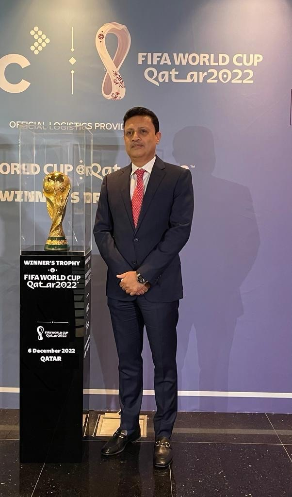

Community · Dec 2022AMJ shared a reflection on Qatar FIFA 2022 and the momentum created by the tournament.
The update framed the World Cup as a source of pride and inspiration for a promising future in Qatar.
As a Qatar-based business, AMJ recognized the significance of the moment for the country and its communities.
Back to Media →